TLS——加密信道的建立¶
简易版 TLS 客户端实现： https://github.com/chanfung032/labs/blob/master/tls/tls13.go
概述¶
一个 TLS 加密信道的建立（Handshake）主要包括两个内容：
客户端和服务端使用非对称加密算法协商出一个共享密钥，后续数据传输使用该密钥+对称加密算法来加密。
服务端通过证书（Certificate）来证明自己就是客户端想要连接的服务端而不是什么中间人之类的。
下面我们以 TLS 1.3 的 Handshake 来详细说明一下这个过程（通过下面的命令来打印出客户端和服务端交互的报文）。
$ openssl s_client -connect cloudflare.com:443 -showcerts -msg
TLS-1.3¶
TLS 1.3 整个的 Handshake 过程如下图所示：
TLS 将消息封装成一个一个的 Record 来传输，每个 Record 包含 1 个或多个消息， Record 格式如下：
ClientHello¶
TLS Handshake 以客户端向服务端发送 ClientHello 开始。客户端使用 x25519 椭圆曲线算法生成一对公钥/密钥，然后将公钥放到 ClientHello 中发送给服务端。
16 Record 类型：Handshake
03 01 Record 协议版本 “3，1”，也就是 TLS-1.0
00 ca 剩余消息长度（下面空白的字段基本都是长度，省略不标注了）
01 Handshake 消息，类型 0x01：client hello
00 00 c6
03 03 客户端使用的 TLS 版本，“3，3”，也就是 TLS-1.2
00 01 02 03 04 05 06 07 08 09 0a 0b 0c 0d 0e 0f
10 11 12 13 14 15 16 17 18 19 1a 1b 1c 1d 1e 1f 随机数
20 Session ID 长度（decrecated）
e0 e1 e2 e3 e4 e5 e6 e7 e8 e9 ea eb ec ed ee ef
f0 f1 f2 f3 f4 f5 f6 f7 f8 f9 fa fb fc fd fe ff Session ID
00 06 支持的加密套件（cipher suite）
13 01 TLS_AES_128_GCM_SHA256
13 02 TLS_AES_256_GCM_SHA384
13 03 TLS_CHACHA20_POLY1305_SHA256
01 00 0x01 表示压缩方法，0x00 表示不压缩
00 77 扩展（Extension）字段长度
00 00 SNI 扩展字段
00 18
00 16 第一个条目的字段长度（可以有多条）
00 条目的类型为 “DNS Hostname”
00 13 Hostname 长度
65 78 61 6d 70 6c 65 2e 75 6c 66 68 65 69 6d 2e 6e 65 74 Hostname
00 0a “支持的椭圆曲线类型”扩展字段
00 08
00 06
00 1d x25519
00 17 secp256r1
00 18 secp384r1
00 0d “客户端支持的签名算法”扩展字段
00 14
00 12
04 03 ECDSA-SECP256r1-SHA256
08 04 RSA-PSS-RSAE-SHA256
04 01 RSA-PKCS1-SHA256
05 03 ECDSA-SECP384r1-SHA384
08 05 RSA-PSS-RSAE-SHA384
05 01 RSA-PKCS1-SHA386
08 06 RSA-PSS-RSAE-SHA512
06 01 RSA-PKCS1-SHA512
02 01 RSA-PKCS1-SHA1
00 33 “Key Share”扩展字段
00 26
00 24
00 1d 使用 curve25519 来交换密钥
00 20 密钥长度
35 80 72 d6 36 58 80 d1 ae ea 32 9a df 91 21 38
38 51 ed 21 a2 8e 3b 75 e9 65 d0 d2 cd 16 62 54 客户端的公钥
00 2d 00 02 01 01
00 2b “支持的 TLS 版本”扩展字段
00 03
02
03 04 TLS 1.3 标示了客户端希望使用 TLS 1.3
为了兼容
发送 client hello 消息使用的 Record 版本是 TLS-1.0 版本，这样即使服务端版本低也能解析这个 Record 并返回错误。
客户端 TLS 握手协议使用 TLS-1.2，但在扩展字段中声明自己支持 TLS-1.3。这样低版本的 Proxy 不会因为版本不支持就丢掉包。
ServerHello¶
服务端同样生成一对公钥密钥并将公钥通过 ServerHello 发送给客户端。
16 Record 类型：Handshake
03 03 Record 协议版本 “3，3”，也就是 TLS-1.2 （升级了）
00 7a
02 Handshake 消息类型 0x01，server hello
00 00 76
03 03 使用的 Handshake 消息版本 TLS 1.2
70 71 72 73 74 75 76 77 78 79 7a 7b 7c 7d 7e 7f
80 81 82 83 84 85 86 87 88 89 8a 8b 8c 8d 8e 8f 随机数
20 Session ID，原样返回
e0 e1 e2 e3 e4 e5 e6 e7 e8 e9 ea eb ec ed ee ef
f0 f1 f2 f3 f4 f5 f6 f7 f8 f9 fa fb fc fd fe ff
13 01 使用 TLS_AES_128_GCM_SHA256 加密套件
00 压缩方法，不压缩
00 2e 扩展字段长度
00 33 “Key Share”扩展字段
00 24
00 1d
00 20
9f d7 ad 6d cf f4 29 8d d3 f9 6d 5b 1b 2a f9 10
a0 53 5b 14 88 d7 f8 fa bb 34 9a 98 28 80 b6 15 服务端公钥
00 2b “支持的 TLS 版本”扩展字段
00 02
03 04 👌，我们使用 TLS 1.3
接下来，服务端和客户端使用 curve25519 算法将对端的公钥和自己的私钥相乘得到一个共享密钥（原理见 ECDH 加密算法 ） 。
得到了密钥后，两端并不是直接使用这个密钥来加密数据，而是使用 HKDF * 函数将这个密钥映射为下面一系列更安全的密钥：
handshake_secret
client handshake traffic secret
client handshake key
client handshake IV
server handshake traffic secret
server handshake key
server handshake IV
其中
client handshake key/IV 会作为参数传给 aes_128_gcm 算法用来加密解密接下来的客户端上行 Handshake 消息。
server handshake key/IV 会作为参数传给 aes_128_gcm 算法用来加密解密接下来的服务器下行 Handshake 消息。
handshake 的 key 不变，但 IV 每发送一个包变化一次，保证每次对称算法用的密钥都不一样（IV 是 initialization vector 的意思，不是罗马数字 4）。
- *
在密码学中，KDF(Key derivation function，密钥派生函数) 使用伪随机函数从诸如主密钥或密码的秘密值中派生出一个或多个密钥。KDF可用于将密钥扩展为更长的密钥或获取所需格式的密钥。HKDF 就是基于 HMAC 的 KDF 函数
ServerChangeCipherSpec¶
服务器接下来会发送一个 ServerChangeCipherSpec 消息给客户端，这个消息在 TLS 1.3 中没有用，只是为了兼容以前协议用。
从这个消息之后，服务端和客户端之间所有的通信都是加密的。
{…,Certificate,Certificate Verify,ServerHandshakeFinished}¶
接下来服务端使用一个 Record 向客户端发送以下 4 个消息（加密的）：
Server Encrypted Extensions
Certificate 服务端的证书信息，客户端可以通过证书信任链验证证书是否可信，详细见 TLS——证书信任链 。
Certificate Verify 使用服务端证书的私钥对本消息之前所有 Handshake 消息的 hash 加密后的数据，客户端可以通过证书的公钥解密这段数据后验证是否一致来验证服务端是否是证书的 Owner。
ServerHandshakeFinished 对本消息以前 Handshake 信息的 hash，发送给客户端，客户端验证一致，用以确认客户端和服务端的通信没有被篡改过。
通过之前 ServerHello 后计算得出的 handshake_secret 和 到此为止所有 Handshake 消息的 SHA256，使用 HKDF 我们可以计算得到下面用来传输实际 Application Data 的密钥：
client application key
server application key
client application IV
server application IV
Application Data 加密方式同 Handshake 一样。
ClientChangeCipherSpec¶
同 ServerChangeCipherSpec 一样，没有用，只做兼容用。
ClientHandshakeFinished¶
同 ServerHandshakeFinished 对本消息以前 Handshake 信息的 hash，发送给服务端，服务端验证一致，用以确认客户端和服务端的通信没有被篡改过。
到此，TLS 1.3 的握手就完成了，加密信道建立完毕，接下来既可以安全的通信了。
参考：